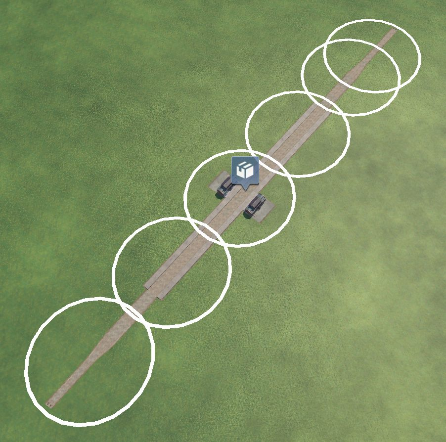

Blueprint Exchange · Guide
How to capture a layout
Build it once, capture it, and place it on any map — yours or someone else's. Five minutes, no typing.

Capturing
- Build your layout in a sandbox game. Flat ground is best — use the terrain tool to level a patch first, and your blueprint will place cleanly anywhere. (The map editor has no rails, so build in a game.)
- Click BPX in the bottom bar, open the Capture a design tab and type a name in the box.
- Press [ Capture ], then click on the map. Every click adds a circle about 100 m across and the status line counts what it found (“+1 construction, +38 segments”). Keep clicking until every building, track and signal is inside a circle.
- Press [ Save ]. It appears in your library tagged (not placed yet).
Checking it
- Press [ Place ] and move the mouse over the map: a blue shadow of the whole layout follows the cursor. Turn it with the slider or the [ -90 ] / [ +90 ] buttons, then click to build it.
- Look it over. Missed a bit? Press [ Undo last blueprint placement ] — everything that placement built disappears — then capture again under the same name with a wider chain of circles.
- When it places complete, you're done: the (not placed yet) tag drops off the moment you keep a placement.
If the game refuses a spot, the status line says why in the game's own words (“Collision”, “Too much slope”). Nothing is built. Try flatter, clearer ground, or turn the layout — a long one needs room along its whole length.
What gets captured
Player-built constructions (stations, depots, assets), their names, free-laid track and roads with their switches, bridges and tunnels, and signals. Industries and town buildings are never captured — the game can't rebuild those. Modded content is fine: if someone lacks a mod your blueprint needs, the mod tells them which one instead of failing.
Sharing

- Your blueprint is a file next to the game —
blueprint_<name>.luain the folder withTransportFever2.exe(Steam → right-click the game → Manage → Browse local files). - On the library page, pick that file, add a line about it, upload. Re-uploading the same blueprint later becomes v2, v3… automatically.
- To use someone else's: download it (it arrives as
blueprint_import.lua, orblueprint_import_2.luaand so on if you grab several), drop them in the same folder, then press Import downloads in game — the game can't see new files by itself. Each one joins your library; press Place. A file a friend sent you directly works the same way once you rename it toblueprint_import.lua. Tired of moving files? Make your own one-click importer.